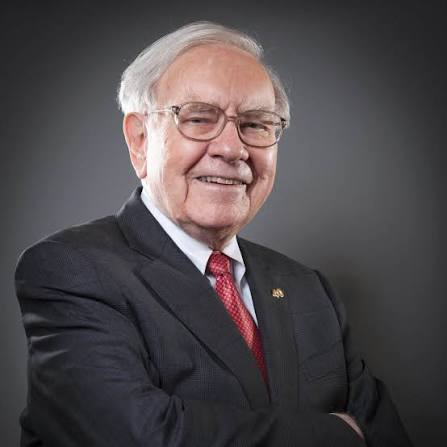
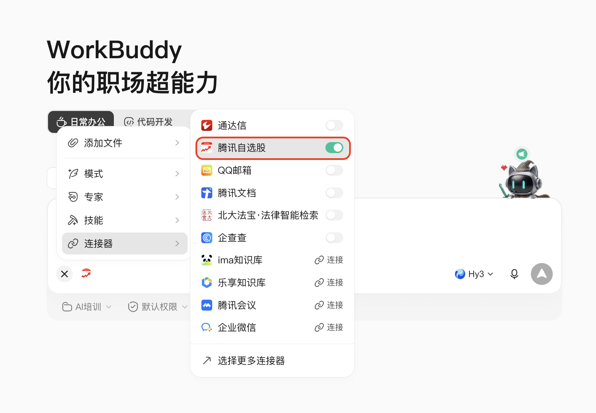

第 01 页 / 共 06 页 · 案例五
只靠提示词 + 一个 MCP
巴菲特式
价值投资量化筛选

本案例不预置任何代码和数据。你只需通过提示词，引导 AI 调用 腾讯自选股 MCP，完成三步：让 AI 给出核心标准 → 按标准筛选股票并保存 Excel → 打分排出最好的 10 只。
所需能力：腾讯自选股 MCP（行情 + 基本面）
本页面已包含三步流程的完整提示词与课后题。
第 02 页 / 共 06 页
整个流程
分三步。
① 问标准
让 AI 基于巴菲特理念，给出 3 个最核心、可量化的筛选标准。
→让 AI 基于巴菲特理念，给出 3 个最核心、可量化的筛选标准。
② 筛股票
AI 调用腾讯自选股 MCP，按标准筛选 A 股并保存 Excel。
→AI 调用腾讯自选股 MCP，按标准筛选 A 股并保存 Excel。
③ 打分排名
AI 按财务数据归一化打分，排出综合最佳的前 10 只。
AI 按财务数据归一化打分，排出综合最佳的前 10 只。
全程由 AI 在对话中完成，你只负责提需求、看结果、做判断。本案例仅作方法论演示，不构成任何投资建议。
第 03 页 / 共 06 页
步骤 ①：
让 AI 给标准。
不要自己写阈值。把「提炼标准」这件事交给 AI，它更清楚哪些指标能在腾讯自选股里拿到、阈值怎么定合理。
请你用巴菲特 / 格雷厄姆那套价值投资的思路， 帮我想出 3 个最核心、而且能用财报数字算出来的选股标准。 每个标准都请说清楚： ① 看的是哪个指标； ② 这个指标是高一点好还是低一点好； ③ 给一个宽松一点的参考线（别卡太严）； ④ 背后是什么道理（用大白话说说巴菲特为什么看重它）。 不用写代码，就给这 3 条标准就好。
验收点：AI 应给出 3 条标准，每条都含「指标 + 方向 + 阈值 + 逻辑」。若某条拿不到数据，让 AI 换一个可量化的指标。
第 04 页 / 共 06 页
步骤 ②：
调 MCP 筛选。
把上一步的标准直接交给 AI，让它用腾讯自选股 MCP 去筛，并把结果落盘成 Excel，方便你后续打开查看。

若当前会话尚未连接腾讯自选股 MCP，先按下图添加并授权，再发送上面的提示词。
现在请你用「腾讯自选股」这个工具，按上面那 3 个标准去筛 A 股， 看最近三年的情况就行。 把所有符合标准的股票都列出来， 每只带上对应标准的几个关键数字， 最后把结果存成这个文件夹里的 Excel 文件， 文件名就叫「AI巴菲特选股清单」。
验收点：生成的 Excel 含通过初筛的候选股及关键指标；明确记录数据日期与来源。候选数量过多时，让 AI 先给概览再展开。
第 05 页 / 共 06 页
步骤 ③：
打分排前 10。
让 AI 用刚拿到的财务数据做归一化打分并加权求和，给出综合排名，并把前 10 名在 Excel 里高亮出来。
请你根据筛出来的这些股票各自的财务数据， 给 3 个标准分别打个分（统一换算成可比的分数再加起来）， 排出总分最高的前 10 只。 在刚才那个 Excel 里再加一张「综合排名」表： 按总分从高到低排，前 10 只高亮标出来， 每只还带上每个标准各自的分数，方便我回头看是怎么算的。
验收点：Excel 新增「综合排名」表，前 10 名高亮，且每项都有分项得分，可回溯权重。权重大小可由你拍板，让 AI 解释即可。
第 06 页 / 共 06 页
课后题：
换个名人再筛一遍
挑一个你熟悉的投资人，让 AI 提炼他的标准，重复三步流程。下面给几个中国人比较熟悉的人，简单练手即可。
练习一 · 查理·芒格
「高质量的生意」。让 AI 提炼芒格式标准（护城河、高且稳定的 ROE、低负债、长期现金流好），筛选 A 股并排前 10，保存 Excel。
「高质量的生意」。让 AI 提炼芒格式标准（护城河、高且稳定的 ROE、低负债、长期现金流好），筛选 A 股并排前 10，保存 Excel。
练习二 · 段永平
「好生意 + 本分」。让 AI 按段永平思路（生意模式清晰、长期持有、巴菲特式安全边际）提炼标准，筛选并排前 10，保存 Excel。
「好生意 + 本分」。让 AI 按段永平思路（生意模式清晰、长期持有、巴菲特式安全边际）提炼标准，筛选并排前 10，保存 Excel。
练习三 · 深度分析
从你任一次前 10 中选一只，做深度分析：护城河、盈利质量与现金流、管理层、行业风险、估值是否合理，输出报告（注明数据日期与来源）。
从你任一次前 10 中选一只，做深度分析：护城河、盈利质量与现金流、管理层、行业风险、估值是否合理，输出报告（注明数据日期与来源）。
小挑战：把芒格和段永平的标准各筛一遍，看看两人「好公司」的重叠股是哪几只，差异又在哪里？
做完练习后，欢迎把筛选结果截图分享到微信群里 👏